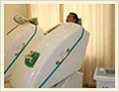

- 

就医指南
Treatment guidelines
医院简介Hospital Introduction 医院动态Hospital News 荣誉资质Honor 媒体报道Media reports 专家团队Expert team 特色疗法Signature Therapies 尖端设备Equipment 康复案例Rehabilitation Case 医院环境Environment 来院路线Route?to?hospital
【核心提示】 白癜风是世界级的医学难题， 但并非是不治之症，白癜风患者必须树立科学的治疗观，相信科学，反对迷信，拒绝各种偏方、秘方，依靠切实有效的特色诊疗技术，用积极的心态来面对这一皮肤顽疾，癜风是可以...
点击了解详情专家在线咨询来源：南宁中山白癜风医院 编辑：南宁中山白癜风医院 发布时间：2013-05-27 15:41 手臂上有白斑怎么办?手臂上的白斑我们首先要确认它是否为白癜风，这就要从白癜风症状开始说起了，如果是白癜风的话，白斑是没有任何...
点击了解详情专家在线咨询来源：南宁中山白癜风医院 编辑：南宁中山白癜风医院 发布时间：2013-05-27 15:40 手部是人类从事一切劳动的主要器官，由于长期暴露在外面，很容易受到外部的一些刺激，比如紫外线的辐射，创伤性外伤，机械性刺激或...
点击了解详情专家在线咨询来源：南宁中山白癜风医院 编辑：南宁中山白癜风医院 发布时间：2013-05-27 15:38 双脚白癜风怎么治疗?南宁中山白癜风医院专家介绍说，白癜风可以发生在人体的任何的部位，不同部位的白癜风治疗和护理上方法是不同的...
点击了解详情专家在线咨询来源：南宁中山白癜风医院 编辑：南宁中山白癜风医院 发布时间：2013-05-27 15:27 胸部白癜风怎样治疗才有效?目前，随着白癜风的发病率增高，胸部得白癜风的情况越来越多，这对患者造成了很大的困扰，所以需要及时到...
点击了解详情专家在线咨询背部出现白癜风是我们生活中不易察觉的一件事情。由于白斑出现并没有什么感觉，所以很多时候患者背部出现白斑后都没有察觉，直到病情恶化才发现自己患上了白癜风。所以在平时的生活中，我们一定要注意观察自己身上的...
点击了解详情专家在线咨询来源：南宁中山白癜风医院 编辑：南宁中山白癜风医院 发布时间：2013-05-27 15:20 颈部的白癜风怎么治疗才好?临床上发现一些白癜风患者发生颈椎疼痛的表现。专家分析这主要是因为一些白癜风患者由于皮损难看不愿出门...
点击了解详情专家在线咨询来源：南宁中山白癜风医院 编辑：南宁中山白癜风医院 发布时间：2013-05-27 15:17 治疗面部白癜风的方法有很多，选择一种对自己有效的治疗方法至关重要。我们一定要对白癜风有一定的了解，白癜风发病于身体任何部位...
点击了解详情专家在线咨询